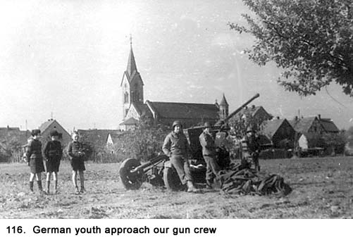
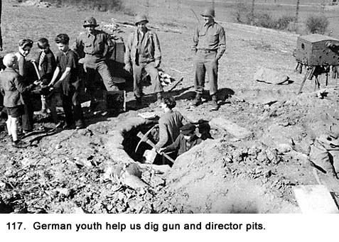
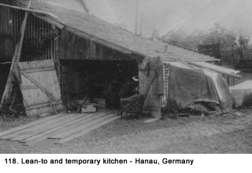
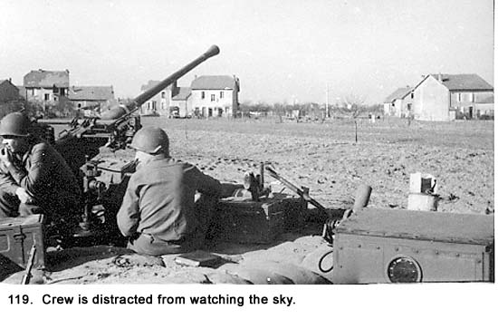
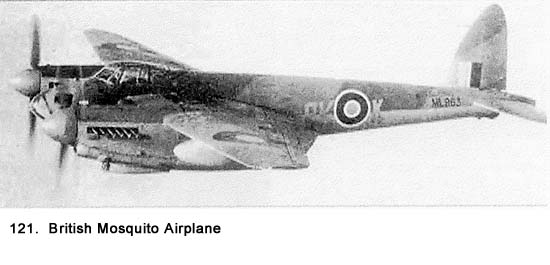
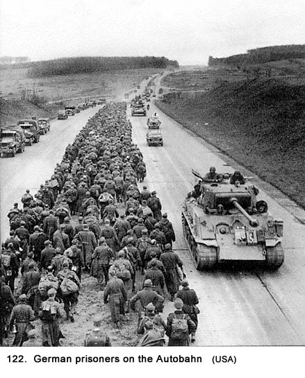
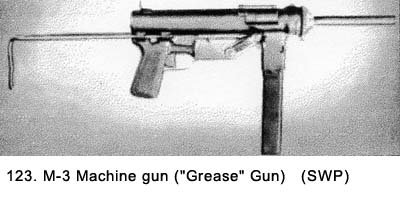
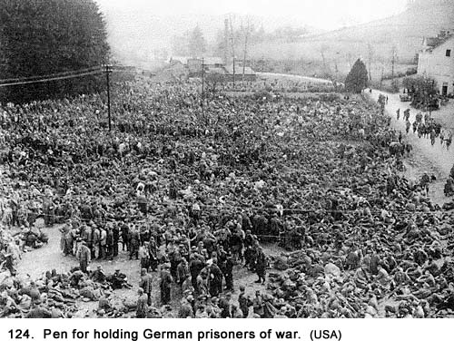

|
Table of Contents < - - - return Chapter 21 < - - - next
World War II Story by Robert F. Gallagher Chapter 20 - Hanau, Germany When you're at home you wish you
were having an adventure; when you're having an adventure you wish you were
safe at home. _______________________ We arrived at our new site in the middle of an open farm field on April 20th. Before we could find a place to billet, we moved again to another field nearby. Some German boys who where about ten or twelve years old arrived and helped us dig in (See Figs. 116 and 117) so we rewarded them with candy bars and chewing gum. They made a big thing about the gum. Either they had never had it before or it had been a long time.  Several of them spoke English well. They wanted to know about the progress of the war, and we had the impression their parents had put them up to the questioning. Unlike the many adults we had seen in other areas, these boys seemed to be quite happy. They laughed, smiled, and horsed around with each other like typical preteens anywhere. It showed us young people were durable and positive regardless of the circumstances. Either that, or they did not fully understand what was going on around them.
 Headquarters told us we would be at this location only for a short period of time so we did not pitch our tents. Instead, we slept in the trucks after unloading some of the equipment and setting up our kitchen, such as it was, in a dilapidated lean-to next to a farmer’s barn (See Fig. 118) that leaked badly when it started to rain. We had discussed the idea of running the farmer and his family out of the farmhouse so we could take it over for a billet. We talked about there being some kind of billet slips issued by the American government for the lodging of soldiers in private homes. The civilians would be reimbursed for the time spent there. Were they good in Germany or just in allied countries? Where did we get the slips? Realizing the procedure would take us through headquarters for answers, we decided against the idea. The real restriction that kept us from running the civilians out of their homes, and we did not want to discuss it, was that nobody had the stomach to make the first move, a knock at the door. Despite all the anti-German information we had been fed, we looked on the civilians more in pity than in hate.  Our location looked like typical farmland one might find in the States with some big exceptions. There were open fields bordered by wooden rail fences. Widely scattered farmhouses dotted the area. Unlike farms in the States, where the animal barns are spaced some distance from the farmhouse, here they were right up against the houses. It took us some time to realize that even though the scene appeared quite natural, there was something different about it. There were no animals, the fields were not cultivated for crops, and there were no bales of hay for feed. No one was doing any work that you would usually see on a farm. It was just another example of how the German people were living. The cities and towns we had seen had all their life drawn out of them, and even though there was less structural damage in the rural areas, these people’s lives were anything but normal. Everyone in Germany had one thing in common regardless of his or her age (maybe the preteens at this location were the exception), social class, or geographic location. They were living in a disconnected society that had no immediate hope of getting organized. They were all feeling the same hardships. There had been some question about what we were supposed to be protecting with our antiaircraft guns at several of the gun emplacements before this one, but now we really wondered. We were out in the middle of a farmer’s field and the only thing visible as far as we could see were more fields and a few scattered farmhouses. The tranquil setting of the farm area made it difficult to concentrate on our objective for being there (See Fig. 119).  There was a country road close to our gun pit the civilians in the area used, so the area was not completely devoid of something to observe. All travel was on foot. But certainly there was no military strategic value to this site. Once we got our telephone hooked up, we called headquarters. Once again, we were breaking our self-imposed rule not to waste our time asking for information when we knew it would not produce any meaningful answer. Was there something just over the horizon? Was there the remote possibility we could meet some ground forces? We knew absolutely nothing about where the enemy was. They could have been a mile away or one hundred miles. We were told nothing about what was going on around us. The only one we could contact by phone from the CP was the battery clerk, so we asked him. He said he would get back to us, and he did several hours later. The answer was the quote from the officer of the day stating, “Tell those guys in gun section number one to just do their job and stop sticking their noses into something that isn’t any of their goddamn business.” “We never learn, do we?” commented Spearing. One morning at this site, I was standing in the lean-to with Stevens and Bapst. It was raining lightly, and I was wearing my helmet, rubber boots and a raincoat over my other clothes. I was moving about in a futile effort to find a dry spot where the rain would not pour through the cracks in the roof and land directly on me. I had just come in from the gun pit after a four-hour stint on duty, and I had my rifle slung over my shoulder with the barrel facing down so that rain would not enter the barrel. I was looking for a place to sit and finally selected one of the five-gallon water cans that could be easily moved about if needed. My rifle lay across my lap. The weather was overcast, gray, and windy and it was quite cold for that time of the year. We were manning our 40mm gun, not so much in anticipation of seeing enemy planes but more because there was nothing else to do or anywhere else to go besides the lean-to. For breakfast, I had picked up a K-ration from the truck to eat. There were some C-rations, and the new 10-in-1 rations, but they required some preparation–at least heating the can–and I was too hungry to wait for that. I cut off the end of the wax-covered box of a K-ration with my pocketknife. I emptied the contents into my hand, putting the small box of cigarettes, the fig bar, and the packet of toilet paper into a pocket of the raincoat. I debated about skipping the K-ration and using up several small chocolate bars I had in another pocket, saved from previous rations. Pulling one out, I looked at it and saw it had evidently laid around in a warehouse someplace where it had melted and then solidified again before I got it. This meant it was no longer chocolate colored but rather a dark yellow. I also knew from previous experience, it would have absolutely no taste. I put it back in my pocket and went back to the ration in hand. I opened the small can and tipped out the piece of cheese shaped like a hockey puck and then opened the small packet of crackers. There always seemed to be more K-rations that contained cheese as the main ingredient than any other kind. According to army regulations, there was supposed to be a breakfast, dinner, and supper variety for each day’s ration but like everything else in the Army that never went according to plan, this seldom happened. It was not unusual to have three cheese rations for one day instead of three different varieties. It took a lot of trading and a good amount of salesmanship with fellow crewmembers as you tried to get a balanced menu. For a drink, I poured the lemon-flavored powder from the little paper packet that came with the ration into my aluminum mess cup. I stood up from the water can I was sitting on, lifted the cover latch, tipped the can until the aluminum cup was nearly full, and stirred the brew with my finger. The water was so chlorinated not even the strong taste of the lemon powder could overcome the medicinal taste. The metal taste of the cup did not help. A hot drink would have tasted a lot better on this chilly morning. The drink resembled lemonade only in its yellow color. The only other drink we had with K-rations was powered coffee. It required hot water and Stevens was starting to build a fire to heat some water in an old ammunition can for himself, Bapst, and anyone else who could drink that stuff. The lean-to had a strong barnyard smell to it, although there were no livestock in sight. The objectionable smell did not help my appetite for food, although it would have taken more than fresh air to make any real difference. The farmer was losing part of his barn as Stevens was using an ax to chop away at the adjoining wall of the lean-to for dry firewood. Bapst pulled a pinch of coarse-grained chewed tobacco out of his crumpled bag of Granger and deposited it in his mouth. The bulge in his left cheek from a tobacco mound was an ever-present sight. He was using an empty C-ration can for a spittoon, a procedure I had seen him follow hundreds of times before. It seemed so inconsistent to have one crew member tearing part of our makeshift shelter down with an ax and the other one taking steps to assure the mud floor of the shed was not befouled with tobacco juice. I could see Bapst was in his usual good mood even though there did not seem to be anything to be cheerful about. His easygoing manner and happy disposition made any duty or idle hours spent with him seem enjoyable. His quick wit and jabbing comments about our living conditions or the duty we were performing seemed to be right on target. He could describe something that was the usual subject of complaints and twist it into the most ludicrous dialogue. This morning he was dispensing one of his exaggerated tales of his life as a civilian. “This place reminds me a lot of the Chez Paree nightclub in Chicago,” he said with a straight face. “You know, take away the long lines to get in, the long-legged chorus girls, the fancy setting, the dirty comedian, the rude waiters, the washroom attendant glaring at his tip, the padded bill, and there is a lot of similarity.” Stevens had stopped his chopping and was looking at him with his mouth agape. “You been there often?” he asked. “Only on Saturday nights.” Bapst replied. Trying to get into the act, I commented, “You forgot the food, Bapst. I’ll bet they don’t have cheese like this,” as I held up the half-eaten hockey puck. “Sure they do, only they give it a French name and charge ten bucks for it,” he replied. The conversation ended there, and Stevens went back to chopping at the farmer’s barn while Bapst kept making contributions to the C-ration can. I was back to my own thoughts, and the foul weather wasn’t helping keep them on a positive track. Lamenting What Could Have Been As I sat there on that gloomy morning downing my K-ration that ran from tasteless (the cheese), to bad tasting (the lemonade), to stale (the crackers), I wondered, what trick of fate had put me here. Wasn’t I supposed to be in a nice comfortable Air Force barracks at an air base in England? And after a good night’s sleep in a comfortable bed I would head over to have a nice hot breakfast of eggs and bacon. Later, I would be briefed on flying bombing missions over Germany. The fact that many planes and their crews did not return from these missions on a regular basis did not occur to me. I was still looking at the Air Force as a branch of the service that was all glamour and excitement with no thought of the downside. My thoughts this day were just one of the many times I indulged in self-pity. The boredom of sitting around places like this with nothing to do was starting to really get to me. Eating my unheated meal on that chilly and rainy morning wasn’t helping my morale. I thought about what it would be like to be back home again with my friends and family after the war was over. Reflections of home had been rare since we arrived in the ETO so this was an anomaly. There would be home-cooked meals, beer blasts with my buddies, prime rib cut fresh from the standing roast for late sandwiches at the Kickapoo Tavern, and lots of dates with the neighborhood girls. If I had thought it out properly, I would have been happy I was not standing in a foxhole as part of an infantry unit, waiting for the Germans to attack or, worse yet, listening to some lieutenant yelling, “Let’s move it out, men!” But, when you dream about what you could be doing, you think about what good things you want for yourself, not what bad things that are also available. After finishing the K-ration, I headed out to the gun pit, but the rain was now coming down harder so I moved for the shelter of the truck instead. But it was not just the rain that had diverted me away from the gun pit. As I approached, the scene was as somber as a funeral. The four men on duty were all wearing their rain gear. The wetness glistened off their helmets and raincoats. There was a surreal look about the scene, which was as static as a war monument in some national park. Spearing and Thomas were sitting on the tracker seats while Dillon and Wellington were standing down in the gun pit, leaning against the side. No one was talking, nor were they looking up at the sky. The ground had turned to mud, and it had been tracked on the gun, the sandbags, and every place else. The setting brought to mind something I had seen in the Army’s newspaper Stars and Stripe about a month earlier. It was a cartoon by Bill Mauldin named, Willie and Joe depicting two funny but sometimes contemptuous enlisted men who were coping with the rugged life of the Army (See Fig. 120). Mauldin was a GI who saw beyond the horror of war to depict the humor that was ever present amid the daily grind of the average dogface. While his cartoons were about infantrymen, every enlisted man who ever put on a uniform could relate to the irony of the subject. He described with simple strokes of his artistic pen the stupidity, boredom, inequality, and rigorous living conditions that were often so preposterous they became humorous. His cutting depiction of military authority caused General Patton to chastise him personally. Fortunately for Mauldin, General Eisenhower saw in his work a morale booster that needed to be continued.
Nobody looked up as I approached the gun pit that morning and it was obvious the crewmembers were all absorbed with their own somber thoughts just like I had been over in the lean-to. It was not the place where I was going to get any cheer, or even conversation, so I figured it would be better to try and get some sleep in the truck. Climbing on board, I removed my mud covered rubber boots and maneuvered around several reclining crewmembers until I found an area that could be used for a bed. I lay down next to Steve, the ex-POW, who had been out in the rain earlier. I could not see him too well because of the semi-darkness in the truck, but I sure could smell him. Because he had no raincoat, his wet wool uniform had a strong musty smell. After adjusting to the odor, my mind started running toward thoughts of food because I was still very hungry. I tried to put it out of my mind and then I thought about the chocolate bars in my pocket. I opened one and ate it. To some extent, it did satisfy my hunger and I didn’t notice its lack of taste. It is amazing how the human spirit can adjust to adverse conditions. What is it that they say about the postman? Neither rain nor snow, etc. In my case, neither rain, nor smell nor tasteless food can keep me from satisfying my hunger with a candy bar. The rain was making a lot of noise as it bounced off the tarpaulin covering the truck so it was impossible to fall asleep. It was too dark in there to read and, like the men I had just seen over at the gun pit, none of us were in the mood to talk. So, I lay there thinking nothing in particular but occasionally lamenting my situation until the rain let up and I finally fell asleep. Later that day, I was back at the gun pit taking another turn at manning my position. The weather cleared, and we spotted six planes going overhead at a very high altitude. We went on alert and began tracking them. Even with binoculars, it was difficult to make a positive identification what type of planes they were. At first, we thought they were German JU-88s but we finally decided they were British Mosquitoes (See Fig. 121). Both were medium twin-engine bombers. We were very disappointed we did not have a target to shoot at. When we were having trouble making identification of the planes, some of the crewmembers wanted to fire at them without knowing their true identity. They were getting desperate to find a target to shoot at and even friendly aircraft were starting to look like potential possibilities. Fortunately, cooler heads prevailed.  My disposition became much more cheerful as the day wore on. Maybe it was the sunny weather or just a change in thinking that improved my outlook. On the whole, my periods of despondency lamentation about what might have been were infrequent and of short duration especially, at this stage of the war. What I had seen in Europe had given me a new yardstick with which to measure my own condition. Compared to a lot of the other GIs I had seen and certainly compared to the German civilians, things could be a lot worse than what I had going for me. Standing around in a gun pit in the middle of a farm field was terribly boring but it wasn’t dangerous or even hard work. The other crewmembers seemed to come out of their dejected mood also, and they began to needle Le Claire about his French heritage. This was a sure sign we were all getting back into a better mood. Those doing the needling knew it would not be long before they would be the ones on the receiving end. Making fun of one another was one of our favorite pastimes and it usually produced some of our best laughs. More German POWs The following evening at dusk, a lone Army truck stopped on the road near us, and the driver signaled for us to come over to him. Bernal and I walked over. The driver was one of the black truck drivers assigned to the Red Ball Express.1 This was a unit of mostly black soldiers (They were called Negroes at the time.) that delivered troops, supplies, food, gasoline, and munitions, to the frontline troops. The drivers were assigned to the Quartermaster and Transportation Corps, and they drove like wild men to get their supplies through. Their insignia was a three-foot diameter red ball painted on each side of the truck cab. The rest of the truck was painted an OD color like every other piece of equipment in the Army. The Military Police and everyone else were instructed these trucks had top priority and were to be given preference over any other kind of vehicle, including armament. From my observation of these drivers, they did not have to be given preference over others - they took it. Their driving, which was somewhere between reckless and crazy, was already somewhat of a legend in the European Theater. The rumor was General Patton thought they were doing a great job despite their excessive speed, and nobody was about to argue. After these trucks made their delivery of supplies to the frontline troops, they were used to haul German prisoners who had recently been captured, back to POW camps. That’s what the soldier who called us over had in his truck - about a hundred prisoners who were all standing up. At this stage of the war, the American Army was taking prisoners by the hundreds of thousands (See Fig. 122).  The men on the truck were very young, and we guessed their ages to be in the midteens. Everyone on board was packed in tight, and the ones around the edges were leaning out over the side railing, which was about waist high, to get a little more breathing room. We had seen some over packed human cargo in Alzey but this was the topper. The prisoners all looked tired, uncomfortable, and ornery; the driver looked scared. We could see into the cab of his truck and he was alone. There was an M-3 machine gun mounted up behind his head at the back of the cab with its collapsible wire stock folded up alongside the barrel (See Fig. 123). This weapon was called a grease gun because that’s what it looked like. It was relatively small and, in my view, an unimpressive-looking weapon, although its looks were somewhat deceiving. It was made from stamped-out metal parts that gave it a somewhat tinny look even though it was a .45-caliber machine gun with the same firepower as the Thompson machine gun with its thirty-round clip. The driver told us he had been loaded up in some small town and was sent back alone with only vague directions as to where the nearest POW pen was located. The word pen was new to us. At this point in the war, the Americans were taking so many prisoners they did not have regular camps to put them in. They would find an open field, put up guards on all sides, and herd the POWs into the area they called pens (See Fig. 124).  The driver had been on the road for hours and was completely lost. While his objective was the nearest POW pen, at this stage he would have been satisfied with finding anyone who would take the load off of his hands. We told him we had no idea where the nearest one was, but we had seen a CP back down the road from where he came, and we directed him to it. We probably would have told him anything to get him out of our area. He made a U-turn with the truck and got stuck in the ditch, but was finally able to pull out of it. As the truck lurched out of the ditch, the cargo swayed. The prisoners at the back of the truck were only protected from falling out by the truck’s tailgate, which barely reached as high as their knees. They were holding on to those who were standing deeper in the truck so any sudden movement made most of the cargo move in unison. For a minute it looked like we were going to have the POWs spilled all over the roadway. However, they managed to recover, and the truck proceeded on its way. The Germans were now in an open grumble. If you could detect what someone was saying in a foreign tongue by his facial expression and tone of voice, profanity was the subject at the moment. The words that we did understand were dummkopf and schweinhund. The sun was fading fast. The driver gave us one last look when he pulled away with an expression consistent with that of a cornered man. We were glad when he drove off. I had a twinge of guilt at seeing that last look of desperation by the driver but it was not enough to signal him to return. I tried to put it out of my mind by convincing myself that our gun crew had no facility to guard and possibly feed that many men. Joe and I watched the truck pick up speed as it headed down the road. As the truck made a bend in the road, there was another swaying of the POWs because the truck was now up to a reckless speed. The driver was in complete compliance with the lore of the Red Ball Express. Speed was their forte. In this case, however, panic may have had more to do with it than a desire to retain the division’s reputation. We headed back to the gun pit and neither Joe nor I talked because we each knew what the other was thinking. Any feeling of guilt about the way we handled the situation soon faded. The next day, Steve finally convinced us we should give him a gun. We had a bolt-action German Mauser K.98 rifle we had picked up someplace along the way, so we gave it to him, along with a couple of clips of ammunition. We did not have to show him how to use it; he knew. Later that day we observed two youths, about twelve or thirteen years old, coming along the road near our gun position. They were riding bicycles, which were scarce but not unseen in Germany. The thing that happened next explained why they were scarce. As we watched the bikers, two men about thirty years old stopped the bikes and knocked the riders off. The men then got on and started to ride off. Steve said the two men were Russian slave laborers, but we had no idea how he knew. They were wearing the same nondescript clothes most civilians wore. We had not seen any Russians up to that time, but then again, if we had we probably would not have recognized them as such. It was not easy to tell one nationality from another. However, it was unusual to see two able-bodied men of that age in civilian clothes at that time in Germany, especially in a rural area. As they drove off, Steve cocked his gun and took aim at them. (The Russians had also invaded Poland in 1939 along with the Germans.) We immediately yanked the gun away from him. Evidently, he hated Russians just a little bit more than Germans. Our thoughts about the incident ran something like this: the stealing of the bike was a non-event. Who cared if the Germans and Russians were fighting? However, the Russians were our allies, and we didn’t condone having them shot in the back over a bicycle. If they were taking vengeance for the way they had been treated in a slave labor or prison of war camp, they probably had a good reason to do so. Finally, Steve convinced us to give him back the rifle. The next morning Steve asked us if we wanted eggs for breakfast. We hadn’t seen a fresh egg or even a chicken since we arrived in Europe. We said, “Yes,” and he took off down the road, carrying a steel helmet by the chinstrap in one hand and the rifle in the other. About half an hour later, he returned with the helmet full of eggs. We couldn’t believe our eyes. Steve said the German civilians kept chickens in their attics in this rural area so they wouldn’t be stolen. He had just marched into their houses and gone up to the attics. With the rifle he met no resistance, or did he? We scrambled the eggs, cooking them in an empty can and then divided them among the crew. They tasted very good and we even had some salt packets left over from some rations to season them. When Steve asked if we wanted some chickens and possibly a piglet, we decided it was time to take the gun back from him, and we did. German Civilians Seek Information We got the word to March Order, so we started to pack up. As we did, half a dozen civilians, all women, arrived to talk to us. They were curious to know what was really happening in the war. They were getting nothing but propaganda from their leaders. In fact, we didn’t know much more than they did, except the Third Army, of which we were part, was advancing deeper into Germany. One of the women said, “I have a cousin who lives in St. Louis.” Nobody commented so she continued, “Do any of you live near there?” Again there was silence as we were not interested in answering questions. The women began hinting around about where we were going but did not have the nerve to ask us directly. Bapst picked up on this, and he pointed northeast as he said, “The next stop is Berlin.” Several of them frowned but they said nothing.
The civilians responded with “Nein! Nein! Nein!” They had fear in their voices and their expressions showed near panic. They really hated the Russians and were scared to death how they would be treated by the uncivilized Bolsheviks from the East. The women also asked us if we were going to fight the Russians when we met up with them. Their propaganda leaders had told them we would attack Russia (actually, they had been told American and German armies would join forces to do so), and they were surprised when we told them we wouldn’t. We had heard rumors about a possible confrontation with the Russians after the German war, but we did not dwell on the subject because it did not sound plausible to us. The people of Germany must have been very disillusioned with the war at this stage. While their Propaganda Minister, Joseph Goebbels, was still feeding them a steady diet of lies, what was really happening must have been all too obvious even to these women in a farming community. Their returning service men, usually casualties, told them what was really occurring on the battlefields, and that the German army was in full retreat on all fronts. The early phase of the Battle of the Bulge a few months earlier had given the Germans, government leaders and civilians alike, a short-lived spurt of optimism. Now, in addition to the invading army, they could observe the same view up in the sky as we could. Almost on a daily basis, there were hundreds, or perhaps thousands, of Allied planes heading in or returning from bombing runs on German cities. These sights, along with the suffering and casualties they were experiencing, made for a very depressed civilian population. You could see it in the faces of these women and in their conversations, which Steve interpreted. Even the remote possibility of the Russians turning up in their area created a new level of fear for these people. We wondered what had changed to make these German civilians speak with us. Were they no longer afraid of their government, who, at this stage of the war, was urging the civilian population to rise up against the invading armies? Up until this stop in Hanau, the adult German people would barely look at us, much less talk. Was the war taking some kind of a turn, coming to an end? Had their radio and information services been destroyed, and had they nothing else available to them? Did being in a rural area make a difference? We never found the answers to any of these questions, but it really wasn’t important to us. We thought no more about it. Those were their problems, not ours. We joined our battalion’s convoy and headed southeast. We hoped our next gun emplacement would involve the defense of something more challenging than a farmer’s field. One thing was sure: we would not know where we were going until we got there, and our purpose in being there would probably never be known. Maybe this lack of information should have bothered us more than it did. In reality, we made jokes among ourselves about the situation. The long period of training in the States and the time overseas had dulled our senses. We just did what we were told and went where we were sent. Our anxiety list included more mundane subjects like when we would get our next hot meal, when we would get a shower, and when would the mail from home finally catch up to us. We hadn’t had mail for nearly a month. As we drove along in the convoy, several of our crew members were still pursuing the subject of who was making the decision about where we were to go next, what were we to guard and how long we would stay at any given site. Certainly, it wasn’t Captain McKee! The first evening in convoy, we stopped on the outskirts of some town and bivouacked for the night. Despite our pledge not to ask headquarters any more questions, some of us had become obsessed with this decision matter and decided to pursue it. We took the subterfuge method of quizzing the officers’ Jeep drivers (we called them dog robbers). They liked to dispense information on the QT they had overheard from listening to the officers talk because it gave them a feeling of importance. Their job was looked down on to a certain degree by the other enlisted men because of their relationship with the brass so this was their way to be one of the boys. Sophie, Lt. Engler’s driver, walked by our truck and we quizzed him about who was making the decisions for the battalion, and for D-Battery in particular. We had expected him to still be upset about the artillery firing back at St. Goar, but he did not seem so. His arm had healed, and I don’t think he and the others who were with him at the time ever knew they had been set up. Before getting to the subject of who determined where the gun sites were to be located at each new location, there were a lot of disparaging remarks about Captain McKee. We were surprised–maybe shocked would be a better word–about Sophie’s opinion of the officers. He took off on a long tirade blasting our opinions of our leaders. He did not agree with our low feelings about Captain McKee, but neither did he have anything specific to offer in his defense. Some of our crew were disappointed because they did not want to hear anything favorable about McKee. Sophie was surprised at our feelings about Lt. Kraft, but he did not know the details of the disastrous scouting episode along the Rhine River. We did not have time to explain it all to him so we each held to our own opinions. Sophie said that Lt. Engler was a great guy, but McKee kept him on a short chain and, therefore, Engler had little to say about what was going on. We concluded McKee didn’t like Engler because he was popular with the enlisted men. Sophie told us all decisions regarding sites to be protected and even most gun locations came down from the Battalion Headquarters. The men in that unit scouted new places, and the colonel in charge of our 815th Battalion laid out a specific area for the guns of each battery. The colonel in charge of our battalion was a West Point Academy graduate, but we had not seen him since we left the States. We often wondered what screw-up he had made to get stuck with an antiaircraft outfit when there were so many more important jobs in the Army. The idea of all decisions coming from the top did not seem logical, but being illogical made them easier to believe. Most things in the Army were done in opposition to what logic would dictate. That night some men slept on the truck, while others of us lay on the shoulder of the road to sleep in our bedrolls. The weather was mild and the stars were out in force. Everyone was up at daybreak as we started packing up in preparation to move out. Our crew was already on board when Sergeant Kornich came down the line. “We’re going to have a little church service,” he announced, “Everybody off the trucks.” “What the hell’s he talking about? It’s not even Sunday,” mumbled Grimes. When we assembled, Engler told us this idea had come from on top, whatever that meant. “You mean from heaven?” quipped Le Claire. We expected to have the chaplain officiate but we did not see him. Someone had decided each platoon would do their own thing so gun sections one through four gathered in one spot. Lieutenant Engler was to lead the service while Sergeant Kornich stood beside him. Because there were men from different religions, he tried to make it as ecumenical as possible. He told us to remove our helmets, bow our heads, and pray in our own way for a few minutes. As we were doing that, Engler began reciting the Lord’s Prayer. “Our Father, who art in heaven, hallowed be thy name….” and then he stopped. Kornich coached him and he continued. “Thy kingdom come…” and again he stopped. Then Kornich took over and finished the prayer. Evidently, it had been a long time since Engler had done any praying. We all just stood there for an embarrassing few minutes until Kornich ordered us back on the trucks. “Load up!” he yelled and you could detect a tone of disgust in his voice. It would be our last impromptu prayer service. That one had been a disaster. We boarded our trucks, formed into a new convoy and took off for places unknown. Steve was kept well hidden from the opening at the back end, and his aromatic uniform caused most of the rest of us to sit near the opening. Breakfast and lunch were served on board. They consisted of K-rations and heavily chlorinated water drunk out of our canteens. The boxes, wrappers, and cans from the rations were thrown out the opening at the rear of the truck as we finished with them. Germany looked so bad, we considered it one big garbage dump and no effort was made on our part to improve it. As time went on, our living conditions and personal habits were becoming more like those of a band of gypsies. Chapter 21 < - - - next Table of Contents < - - - return _________________________ Footnotes and Source of Photographs. Copyright, Robert F. Gallagher, 1999 - 2015, all rights reserved on all images and content.
|

 Wellington (See Fig. 125), who could be a wise guy at times, told them, “
Wellington (See Fig. 125), who could be a wise guy at times, told them, “